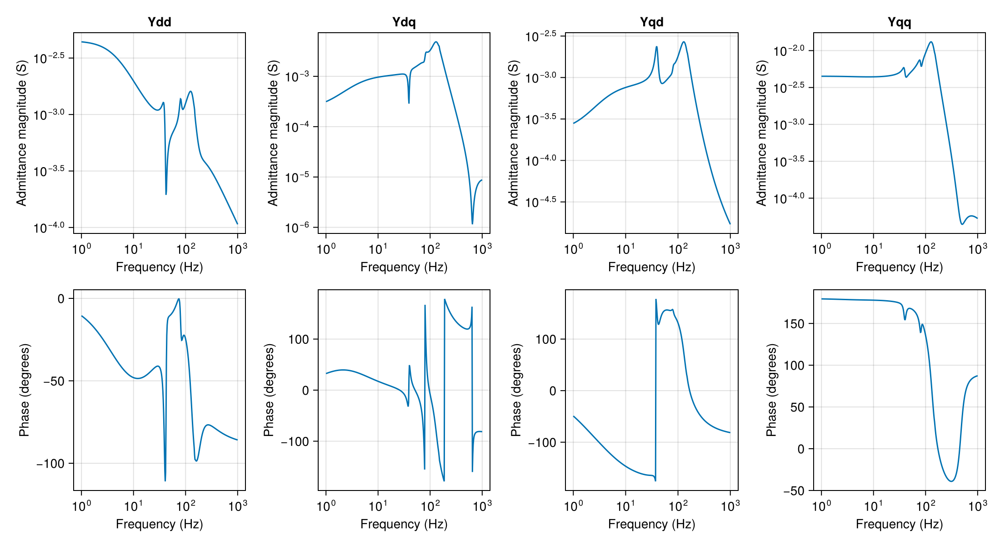
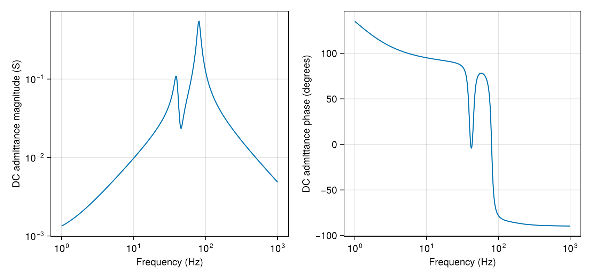
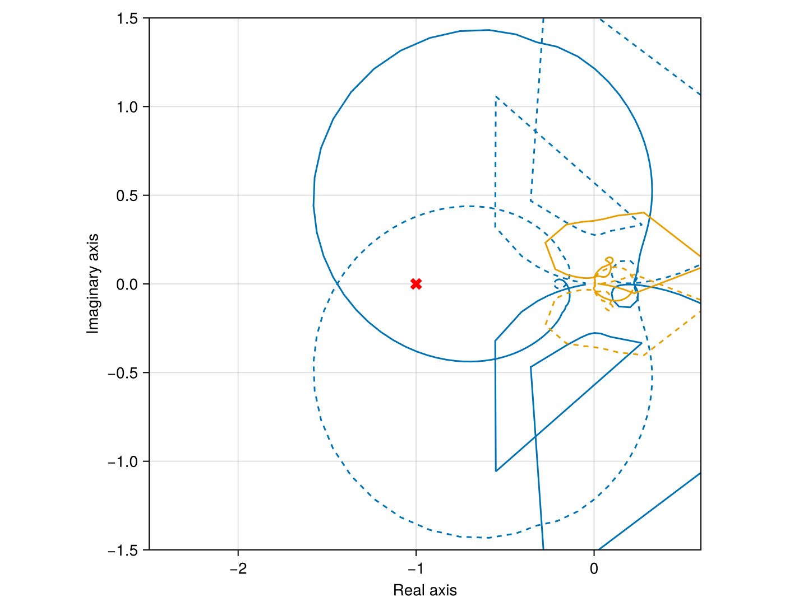

Point-to-point HVDC admittance and stability
A 100 km DC cable joins a rectifier to an inverter that injects 600 MW and 300 MVAr into a 380 kV AC system. The rectifier regulates the 800 kV DC voltage. AC lines and the grid inductance set the voltage response to converter current.
using PowerImpedance
using CairoMakie
voltage = 380 / sqrt(3);Converter blocks
The electrical blocks contain 50 mH arm inductors and 400 submodules per arm.
electrical1 = ElectricalMMC();The inverter transformer has a 333/380 ratio and 46.1 mH leakage inductance on its converter side.
electrical2 = ElectricalMMC(turnsRatio = 333/380, Lᵣ = 0.0461, Rᵣ = 0.4103);Instantaneous measurements supply AC voltage, AC current and DC voltage to the controls.
measurement = Measurement();The DC-voltage loop at c1 sets its d-axis current reference from the DC-voltage error.
dc_control = OuterActiveVdcControl(pi_ctrl = PIControl(Kp = 5, Ki = 15));The active-power loop at c2 sets its d-axis current reference from the power error.
power_control = OuterActivePowerControl(pi_ctrl = PIControl(Kp = 0.1, Ki = 31.4159));Reactive-power control sets the q-axis current reference at each converter.
reactive_control = OuterReactiveQControl(pi_ctrl = PIControl(Kp = 0.1, Ki = 31.4159));The inner AC current loop adjusts the converter voltage to track the d and q current references. The gains use the converter's per-unit voltage, current and power bases.
current_control = InnerCurrentPIControl(pi_ctrl = PIControl(Kp = 0.7691, Ki = 522.7654),
activate_ω_c_multiplication = false);Circulating current suppression regulates the second-harmonic current between the arms.
circulating_control = CirculatingCurrentSuppressionControl(PIControl(Kp = 0.1048,
Ki = 48.1914));
internal_control = ΣdqzControlTEC(ccsc = circulating_control);The PLL follows the AC voltage angle. The inverter uses a larger proportional gain and a first-order 50 Hz filter in the angle measurement.
sync1 = PLLSynchronization(pi_ctrl = PIControl(Kp = 0.28, Ki = 12.5664));
sync2 = PLLSynchronization(pi_ctrl = PIControl(Kp = 7, Ki = 12.5664),
filter = PowerImpedance.Butterworth(order = 1, ωc = 2π * 50));Modulation translates the commanded voltages into submodule insertion indices.
modulation = UncompensatedModulation();The rectifier combines DC-voltage and reactive-power control at the AC triangle.
c1 = let model = mmc(vDC_base = 800, elec = electrical1, meas = measurement, sync = sync1,
delta_control = ΔdqControlGFL(outer_active = dc_control,
outer_reactive = reactive_control, occ = current_control),
sigma_control = internal_control, modulation = modulation)
b = bases(model)
component(model;
delta_control = (outer_active = (v_dc_ref = 800 / b.v_dc,),
outer_reactive = (q_ref = 0.0,)),
powerflow = (; p_ac = -600 / b.S,
v_ac = (voltage * sqrt(2)) / b.v_ac))
end;The inverter controls active and reactive power at Bus 6.
c2 = let model = mmc(vDC_base = 800, vACbase_LL_RMS = 333, elec = electrical2,
meas = measurement, sync = sync2,
delta_control = ΔdqControlGFL(outer_active = power_control,
outer_reactive = reactive_control, occ = current_control),
sigma_control = internal_control, modulation = modulation)
b = bases(model)
component(model;
delta_control = (outer_active = (p_ref = 600 / b.S,),
outer_reactive = (q_ref = 300 / b.S,)),
powerflow = (; v_dc = 800 / b.v_dc,
v_ac = (voltage * sqrt(2)) / b.v_ac))
end;Cable and AC grids
The bipolar DC cable has copper cores, metallic screens and magnetic armour. Insulation separates the conducting layers, which set its shunt capacitance and series losses.
dc_line = cable(length = 100e3, positions = [(-0.5, 1), (0.5, 1)],
C1 = Conductor(rₒ = 24.25e-3, ρ = 1.72e-8),
C2 = Conductor(rᵢ = 41.75e-3, rₒ = 46.25e-3, ρ = 22e-8),
C3 = Conductor(rᵢ = 49.75e-3, rₒ = 60.55e-3, ρ = 18e-8, μᵣ = 10),
I1 = Insulator(rᵢ = 24.25e-3, rₒ = 41.75e-3, ϵᵣ = 2.3),
I2 = Insulator(rᵢ = 46.25e-3, rₒ = 49.75e-3, ϵᵣ = 2.3),
I3 = Insulator(rᵢ = 60.55e-3, rₒ = 65.75e-3, ϵᵣ = 2.3));The AC conductors occupy a flat arrangement at 30 m height with 10 m phase spacing. Earth resistivity is 100 ohm metres. The grounded wires contribute to the earth-return impedance.
conductors = Conductors(organization = :flat, nᵇ = 3, nˢᵇ = 1,
Rᵈᶜ = 0.063, rᶜ = 0.015, yᵇᶜ = 30, Δyᵇᶜ = 0,
Δxᵇᶜ = 10, Δ̃xᵇᶜ = 0, dˢᵇ = 0, dˢᵃᵍ = 10);
groundwires = Groundwires(nᵍ = 2, Rᵍᵈᶜ = 0.92, rᵍ = 0.0062,
Δxᵍ = 6.5, Δyᵍ = 7.5, dᵍˢᵃᵍ = 10);Line tl1 joins the rectifier's external grid buses over 25 km.
tl1 = overhead_line(length = 25e3, conductors = conductors, groundwires = groundwires,
earth_parameters = (1, 1, 100));Line tl2 connects the second grid bus to the rectifier over 25 km.
tl2 = overhead_line(length = 25e3, conductors = conductors, groundwires = groundwires,
earth_parameters = (1, 1, 100));Line tl3 completes the rectifier-side triangle with a 50 km connection.
tl3 = overhead_line(length = 50e3, conductors = conductors, groundwires = groundwires,
earth_parameters = (1, 1, 100));The inverter connects through a 90 km overhead line to the weaker AC grid.
tl67 = overhead_line(length = 90e3, conductors = conductors, groundwires = groundwires,
earth_parameters = (1, 1, 100));The inverter grid has a 0.9 pu voltage behind 1 ohm and 30 mH.
g1 = ac_source(v = 0.9 * voltage * sqrt(2));
Zg1 = impedance(z = s -> 1 + 0.03s, conductors = 3);Grid g2 has nominal voltage behind 1 ohm and 10 mH.
g2 = ac_source(v = voltage * sqrt(2));
Zg2 = impedance(z = s -> 1 + 0.01s, conductors = 3);Grid g3 supplies the other corner of the AC triangle through the same impedance.
g3 = ac_source(v = voltage * sqrt(2));
Zg3 = impedance(z = s -> 1 + 0.01s, conductors = 3);
elements = (; g1, Zg1, g2, Zg2, g3, Zg3, c1, c2, dc_line, tl1, tl2, tl3, tl67);The buses join named component ports. AC buses create d and q nets. Converters connect through their ac and dc ports.
connections = (
NetworkBuilder.Bus(:Bg3; ports = ((:g3, :ac), (:Zg3, :side1)), domain = ACDQ),
NetworkBuilder.Bus(:Bg2; ports = ((:g2, :ac), (:Zg2, :side1)), domain = ACDQ),
NetworkBuilder.Bus(:B1; ports = ((:Zg3, :side2), (:tl1, :side1), (:tl3, :side1)),
domain = ACDQ),
NetworkBuilder.Bus(:B2; ports = ((:Zg2, :side2), (:tl1, :side2), (:tl2, :side1)),
domain = ACDQ),
NetworkBuilder.Bus(:B3; ports = ((:c1, :ac), (:tl2, :side2), (:tl3, :side2)),
domain = ACDQ),
NetworkBuilder.Bus(:B4; ports = ((:c1, :dc), (:dc_line, :side1))),
NetworkBuilder.Bus(:B5; ports = ((:c2, :dc), (:dc_line, :side2))),
NetworkBuilder.Bus(:B6; ports = ((:c2, :ac), (:tl67, :side1)), domain = ACDQ),
NetworkBuilder.Bus(:B7; ports = ((:Zg1, :side2), (:tl67, :side2)), domain = ACDQ),
NetworkBuilder.Bus(:B8; ports = ((:g1, :ac), (:Zg1, :side1)), domain = ACDQ)
);Operating point and admittance
Power flow gives the terminal voltages, angles and losses for converter linearization.
network = NetworkBuilder.define(elements, connections;
options = (; voltageBase = voltage,
power_flow = (; is_bounded = (; bus_voltage = true),
optimizer = (; hessian_approximation = "limited-memory"))));
power_flow = compute(PowerFlowProblem(network), ACDCPowerFlow());
(rectifier = power_flow.operating_point[:c1], inverter = power_flow.operating_point[:c2])(rectifier = (ac = ACPortValues(308.2903083599182, -0.03821497676850523, 607.5556806764181, 0.0), dc = DCPortValues(800.0, -604.7852649353734)), inverter = (ac = ACPortValues(315.02911908551056, 0.2065795785352884, -600.0, -300.0), dc = DCPortValues(798.5923049932968, 603.721073438433)))The admittance order is DC, d, q. Each entry relates a terminal current perturbation to a voltage perturbation while the other terminal voltages remain fixed. The q-axis admittance reaches about 13 mS at 127 Hz. The off-diagonal entries reach 4.8 and 2.7 mS near 130 Hz and show coupling between the AC axes.
linearized = compute(LinearizationProblem(network, power_flow), AdmittanceLinearization());
frequencies = exp10.(range(0, 3; length = 400));
converter_y = NetworkBuilder.get_y(linearized.network_model, :c2, 2π * im .* frequencies);
ac_admittance = Figure(size = (1100, 600));
for (column, (row, entry, label)) in
enumerate(((2, 2, "Ydd"), (2, 3, "Ydq"), (3, 2, "Yqd"), (3, 3, "Yqq")))
magnitude = Axis(ac_admittance[1, column]; title = label,
xlabel = "Frequency (Hz)", ylabel = "Admittance magnitude (S)", xscale = log10,
yscale = log10);
phase = Axis(ac_admittance[2, column]; xlabel = "Frequency (Hz)",
ylabel = "Phase (degrees)", xscale = log10);
lines!(magnitude, frequencies, abs.(converter_y[row, entry, :]));
lines!(phase, frequencies, rad2deg.(angle.(converter_y[row, entry, :])));
end
ac_admittance
Active-power control and the energy stored in the arms affect the DC admittance. Its largest peak is about 0.54 S at 81 Hz. Above this peak the phase approaches -90 degrees and the magnitude falls with frequency.
dc_admittance = Figure(size = (850, 400));
dc_magnitude = Axis(dc_admittance[1, 1]; xlabel = "Frequency (Hz)",
ylabel = "DC admittance magnitude (S)", xscale = log10, yscale = log10);
dc_phase = Axis(dc_admittance[1, 2]; xlabel = "Frequency (Hz)",
ylabel = "DC admittance phase (degrees)", xscale = log10);
lines!(dc_magnitude, frequencies, abs.(converter_y[1, 1, :]));
lines!(dc_phase, frequencies, rad2deg.(angle.(converter_y[1, 1, :])));
dc_admittance
Impedance-based stability
Removing c2 gives the grid impedance at its AC terminal. Removing tl67 gives the converter impedance with its DC cable and rectifier connected. Their matrix ratio is the loop gain at that terminal.
grid_impedance = compute(
PowerImpedanceProblem(linearized.network_model;
nodes = [:B6d, :B6q], eliminated_elements = [:c2],
frequency_range = (1.0, 1e3, 400)),
NodalImpedance());
converter_impedance = compute(
PowerImpedanceProblem(linearized.network_model;
nodes = [:B6d, :B6q], eliminated_elements = [:tl67],
frequency_range = (1.0, 1e3, 400)),
NodalImpedance());
terminal_ratio = similar(grid_impedance.response);
for index in axes(terminal_ratio, 3)
terminal_ratio[:, :, index] = grid_impedance.response[:, :,
index] / converter_impedance.response[:, :, index];
end
loop_gain = FrequencyResponseResult(LoopGain(), :loopgain, terminal_ratio,
grid_impedance.frequencies, grid_impedance.nodes, linearized.network_model, (;));
stability = compute(StabilityProblem(loop_gain), GeneralizedNyquist());One trajectory crosses the real axis to the left of -1 in the clockwise direction. The Nyquist calculation identifies an unstable interaction, with a response peak near 109 Hz. The inverter's PLL and current controls act against the impedance of the 90 km AC line and its grid inductance.
nyquist = Figure(size = (700, 550));
axis = Axis(nyquist[1, 1]; xlabel = "Real axis", ylabel = "Imaginary axis",
aspect = DataAspect());
for (index, locus) in enumerate(eachcol(stability.output.eigenloci))
lines!(axis, real.(locus), imag.(locus); color = Cycled(index));
lines!(axis, real.(locus), -imag.(locus); color = Cycled(index), linestyle = :dash);
end
scatter!(axis, [-1.0], [0.0]; color = :red, marker = :xcross, markersize = 15);
xlims!(axis, -2.5, 0.6);
ylims!(axis, -1.5, 1.5);
nyquist
Back to Examples